05 - Задача класифікації: логістична регресія
Machine Learning
Ігор Мірошниченко
КНЕУ::ІІТЕ
2023-04-17
Класифікація
Вступ
Проблеми регресії намагаються передбачити число, яке матиме результат — цілі числа (наприклад, кількість котів), дійсні (наприклад, номер будинку) тощо…
Проблеми класифікації натомість прагнуть передбачити категорію результату
Двійкові результати
успіх/невдача; правда/неправда; A або B; кіт або не кіт; тощоМультикласові результати
так, ні, або можливо; кольори; літери; тип кота; тощо
Цей тип результату часто називають якісною або категоричною величиною.
Приклади
Напевно, буде корисно згадати кілька приклади проблем класифікації.
- Використовуючи історію життя/кримінальну історію (та демографічні показники?):
Чи можемо ми передбачити, чи буде обвинувачений звільнений під заставу?
- На основі набору симптомів і спостережень:
Чи можемо ми передбачити медичний стан пацієнта?
- З пікселів у зображенні:
Чи можемо ми класифікувати зображення як бублик, цуценя чи інше?
Підходи
Можна уявити собі два пов’язані підходи до класифікації
Передбачити, яку категорію прийме результат.
Оцінити ймовірність кожної категорії для результату.
Тим не менш, загальний підхід буде
- Візьміть набір навчальних спостережень \((x_1,y_1),\, (x_2,y_2),\,\ldots,\,(x_n,y_n)\)
- Створіть класифікатор \(\hat{y}_o=\mathop{f}(x_o)\)
балансуючи між зміщенням і дисперсією
Чому не регресія?
Методи регресії не призначені для роботи з категоріями.
Приклад Розглянемо три медичні діагнози: інсульт/stroke, передозування/overdose та напад/seizure.
Для регресії потрібен числовий результат — як нам кодувати наші категорії?
Варіант 1 \[Y=\begin{cases} \displaystyle 1 & \text{if }\color{#e64173}{\text{ stroke}} \\ \displaystyle 2 & \text{if }\color{#6A5ACD}{\text{ overdose}} \\ \displaystyle 3 & \text{if }\color{#FFA500}{\text{ seizure}} \\ \end{cases}\]
Варіант 2 \[Y=\begin{cases} \displaystyle 1 & \text{if }\color{#6A5ACD}{\text{ overdose}} \\ \displaystyle 2 & \text{if }\color{#e64173}{\text{ stroke}} \\ \displaystyle 3 & \text{if }\color{#FFA500}{\text{ seizure}} \\ \end{cases}\]
Варіант 3 \[Y=\begin{cases} \displaystyle 1 & \text{if }\color{#FFA500}{\text{ seizure}} \\ \displaystyle 2 & \text{if }\color{#e64173}{\text{ stroke}} \\ \displaystyle 3 & \text{if }\color{#6A5ACD}{\text{ overdose}} \\ \end{cases}\]
Порядок категорій незрозумілий, не кажучи вже про фактичну оцінку.
Вибір порядку та оцінки може вплинути на прогнози. 😿
Чому не регресія?
Як ми бачили, бінарні значення простіші.
Приклад Якщо ми обираємо лише між інсульт/stroke та передозування/overdose
Варіант 1 \[Y=\begin{cases} \displaystyle 0 & \text{if }\color{#e64173}{\text{ stroke}} \\ \displaystyle 1 & \text{if }\color{#6A5ACD}{\text{ overdose}} \\ \end{cases}\]
Варіант 2 \[Y=\begin{cases} \displaystyle 0 & \text{if }\color{#6A5ACD}{\text{ overdose}} \\ \displaystyle 1 & \text{if }\color{#e64173}{\text{ stroke}} \\ \end{cases}\]
отримаємо той самий результат.
Чому не регресія?
У цих бінарних результатах ми можемо застосувати лінійну регресію.
Ці моделі називаються моделі лінійної ймовірності / linear probability models (LPM).
Передбачення з LPM
оцінити умовну ймовірність \(y_i = 1\), тобто, \(\mathop{\text{Pr}}\left(y_o = 1 \mid x_o\right)\)
не обмежені між 0 і 1
Враховує порядок і зрозумілу оцінку ймовірності
Інші переваги: Коефіцієнти легко інтерпретуються + ми знаємо, як працює OLS.
Розглянемо приклад: набір даних Default з ISLR
Дані: Вихідна змінна default приймає лише два значення (лише 3.3% є default).
Дані: Вихідна змінна default приймає лише два значення (лише 3.3% є default).
Лінійна ймовірнісна модель має проблеми з прогнозуванням у цьому випадку:
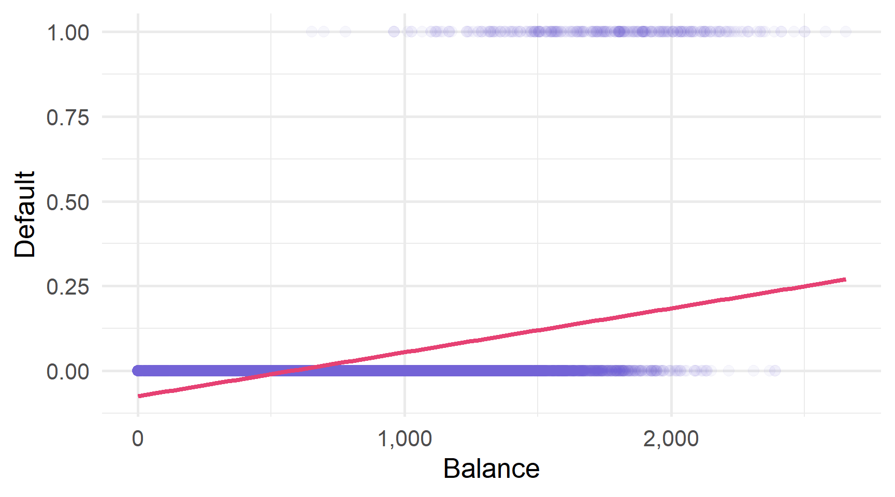Логістична регресія пропонує краще рішення.
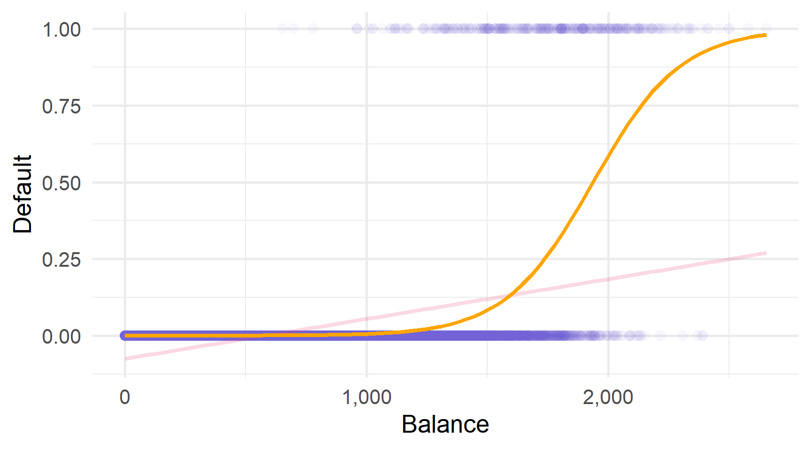Логістична регресія
Вступ
Логістична регресія моделює ймовірність того, що наш результат \(Y\) належить до конкретної категорії.
Наприклад, ми щойно побачили графік, де
\[ \begin{align} \mathop{\text{Pr}}\left(\text{Default} = \text{Yes} | \text{Balance}\right) = p(\text{Balance}) \end{align} \]
ми моделюємо ймовірність «дефолту» як функцію від «балансу».
Ми використовуємо оцінені ймовірності, щоб робити прогнози, наприклад,
- якщо \(p(\text{Balance})\geq 0,5\), ми можемо передбачити «Так» для
default - щоб бути консервативними, ми могли б передбачити “Так”, якщо \(p(\text{Balance})\geq0.1\)
Чому “логістична”?
Ми хочемо змоделювати ймовірність як функцію предикторів \(\left(\beta_0 + \beta_1 X\right)\).
Лінійна ймовірнісна модель
лінійне перетворення. предикторів \[
\begin{align}
p(X) = \beta_0 + \beta_1 X
\end{align}
\]
Логістична модель
Логістичне перетворення предикторів \[
\begin{align}
p(X) = \dfrac{e^{\beta_0 + \beta_1 X}}{1 + e^{\beta_0 + \beta_1 X}}
\end{align}
\]
Що робить ця логістична функція \(\left(\frac{e^x}{1+e^x}\right)\)?
забезпечує прогнозування між 0 \((x\rightarrow-\infty)\) та 1 \((x\rightarrow\infty)\)
створює S-подібний функцію
Чому “логістична”?
Трошки математики
\[ \begin{align} p(X) = \dfrac{e^{\beta_0 + \beta_1 X}}{1 + e^{\beta_0 + \beta_1 X}} \implies \color{#e64173}{\log \left( \dfrac{p(X)}{1-p(X)}\right)} = \color{#6A5ACD}{\beta_0 + \beta_1 X} \end{align} \]
Нове визначення: log шансів1 ліворуч і лінійні предиктори праворуч.
- інтерпретація \(\beta_j\) це логарифм шансів, а не ймовірність
- зміни ймовірності через \(X\) залежать від рівня \(X\)
Оцінювання
Перш ніж ми зможемо почати прогнозувати, нам потрібно оцінити \(\beta_j\)s.
\[ \begin{align} p(X) = \dfrac{e^{\beta_0 + \beta_1 X}}{1 + e^{\beta_0 + \beta_1 X}} \implies \color{#e64173}{\log \left( \dfrac{p(X)}{1-p(X)}\right)} = \color{#6A5ACD}{\beta_0 + \beta_1 X} \end{align} \]
Ми оцінюємо логістичну регресію за допомогою метод максимальної правдоподібності / maximum likelihood estimation.
Метод максимальної правдоподібності шукає \(\beta_j\)s, які роблять наші дані «найімовірнішими» з урахуванням створеної нами моделі.
Максимальна правдоподібность
MLE шукає \(\beta_j\)s, які роблять наші дані «найімовірнішими» за допомогою нашої моделі.
\[ \begin{align} \color{#e64173}{\log \left( \dfrac{p(X)}{1-p(X)}\right)} = \color{#6A5ACD}{\beta_0 + \beta_1 X} \end{align} \]
- \(\color{#6A5ACD}{\beta_j}\) показує, як \(x_j\) впливає на логарифм шансів
- шанс \(= \dfrac{p(X)}{1-p(X)}\).
Якщо \(p(X) > 0,5\), то шанси \(>1\) і логарифм шансів \(> 0\).
Тож ми хочемо вибрати \(\color{#6A5ACD}{\beta_j}\) так, щоб
- log odds вище нуля для спостережень, де \(y_i=1\)
- log odds навіть більше для областей \(x_j\), де більшість \(i\) мають \(y_i=1\)
Більш формально: максимальна правдоподібность
Ми оцінюємо логістичну регресію шляхом максимізації функції ймовірності
\[ \begin{align} \mathop{\ell}(\beta_0,\beta_1) = \prod_{i:y_i=1} \mathop{p}(x_i) \prod_{i:y_i=0} (1-\mathop{p}(x_i)) \end{align} \]
Функція ймовірності максимізується за допомогою
- збільшення \(p(x_i)\) для спостережень з \(y_i = 1\)
- зробити \(p(x_i)\) малим для спостережень з \(y_i = 0\)
В R
У R ви можете виконати логістичну регресію за допомогою функції glm().
Також: logistic_reg() в tidymodels (з engine "glm").
Крім того: glm означає узагальнену (лінійну модель).
«Узагальнений» по суті означає, що ми застосовуємо певне перетворення до \(\beta_0 + \beta_1 X\), як логістична регресія застосовує логістичну функцію.
Більш загально:
\[\color{#FFA500}{\mathbf{y}} = \color{#20B2AA}{g}^{-1} \left( \color{#6A5ACD}{\mathbf{X}} \color{#e64173}{\beta} \right) \iff \color{#20B2AA}{g}(\color{#FFA500}{\mathbf{y}}) = \color{#6A5ACD}{\mathbf{X}} \color{#e64173}{\beta} \]
В R
У R ви можете виконати логістичну регресію за допомогою функції glm().
Ключові аргументи (дуже схожі на lm())
укажіть
формулу, наприклад,y ~ .абоy ~ x + I(x^2)визначте
family = "binomial"надати функції деякі
data
Call:
glm(formula = i_default ~ balance, family = "binomial", data = default_df)
Deviance Residuals:
Min 1Q Median 3Q Max
-2.2697 -0.1465 -0.0589 -0.0221 3.7589
Coefficients:
Estimate Std. Error z value Pr(>|z|)
(Intercept) -1.065e+01 3.612e-01 -29.49 <2e-16 ***
balance 5.499e-03 2.204e-04 24.95 <2e-16 ***
---
Signif. codes: 0 '***' 0.001 '**' 0.01 '*' 0.05 '.' 0.1 ' ' 1
(Dispersion parameter for binomial family taken to be 1)
Null deviance: 2920.6 on 9999 degrees of freedom
Residual deviance: 1596.5 on 9998 degrees of freedom
AIC: 1600.5
Number of Fisher Scoring iterations: 8Оцінювання та прогнози
Таким чином, наші оцінки \(\hat{\beta}_0 \approx -10.65\) і \(\hat{\beta}_1 \approx 0.0055\).
Пам’ятайте: Ці коефіцієнти для log odds.
Якщо ми хочемо робити передбачення для \(y_i\),
тоді ми спочатку повинні оцінити ймовірність \(\mathop{p}(\text{Balance})\)
\[ \begin{align} \hat{p}(\text{Balance}) = \dfrac{e^{\hat{\beta}_0 + \hat{\beta}_1 \text{Balance}}}{1 + e^{\hat{\beta}_0 + \hat{\beta}_1 \text{Balance}}} \approx \dfrac{e^{-10.65 + 0.0055 \cdot \text{Balance}}}{1 + e^{-10.65 + 0.0055 \cdot \text{Balance}}} \end{align} \]
- Якщо \(\text{Balance} = 0\), ми оцінюємо \(\mathop{\hat{p}} \approx 0.000024\)
- Якщо \(\text{Balance} = 2000\), ми оцінюємо \(\mathop{\hat{p}} \approx 0.586\)
- Якщо \(\text{Balance} = 3000\), ми оцінюємо \(\mathop{\hat{p}} \approx 0.997\)
Прогнози логістичної регресії \(\mathop{p}(\text{Balance})\)
Примітка: Усе, що ми робили досі, поширюється на моделі з багатьма предикторами.
Вже відомо: Ви можете використовувати predict(), щоб отримати прогнози з об’єктів glm.
Нове та важливо: predict() створює кілька type передбачень
type = "response"передбачає шкалу залежної змінної
для логістичної регресії це означає прогнозовані ймовірності (від 0 до 1)type = "link"передбачає на шкалі лінійних предикторів
для логістичної регресії це означає передбачувані логарифмічні коефіцієнти (від -∞ до ∞)
Обережно: За замовчуванням використовується type = "link", що вам може не знадобитися.
Прогнозування
Зібравши все разом, ми можемо отримати (оцінені) ймовірності \(\hat{p}(X)\)
які ми можемо використовувати для прогнозування \(y\)
Оцінювання
Confusion matrix
матриця невідповідності є зручним способом відображення
вірних та хибник прогнозів для кожного класу нашого результату.
| Truth | |||
| No | Yes | ||
| Prediction | No | True Negative (TN) | False Negative (FN) |
| Yes | False Positive (FP) | True Positive (TP) | |
Accuracy методу – це частка правильних передбачень, тобто, Accuracy = (TN + TP) / (TN + TP + FN + FP)
Ця матриця також допомагає відобразити багато інших показників оцінки.
Confusion matrix
Чутливість: частка позитивних результатів \(Y=1\), які ми правильно прогнозуємо.
Sensitivity = TP / (TP + FN)
| Truth | |||
| No | Yes | ||
| Prediction | No | True Negative (TN) | False Negative (FN) |
| Yes | False Positive (FP) | True Positive (TP) | |
Sensitivity також називається recall і true-positive rate.
Одиниця мінус sensitivity це частка помилок типу II.
Confusion matrix
Specificity: частка негативних результати \((Y=0)\), які ми правильно передбачили.
Specificity = TN / (TN + FP)
| Truth | |||
| No | Yes | ||
| Prediction | No | True Negative (TN) | False Negative (FN) |
| Yes | False Positive (FP) | True Positive (TP) | |
Одиниця мінус sensitivity це false-positive rate або частка помилок типу I.
Confusion matrix
Precision: частка прогнозованих позитивних результатів \((\hat{Y}=1)\), які є правильними.
Precision: = TP / (TP + FP)
Що обрати?
Q Отже, який критерій ми повинні використовувати?
A Все залежить від умов та контексту.
- Чи сtrue positives більш вагомі ніж true negatives?
Sensitivity буде ключовим.
- Ви хочете мати високу впевненість у прогнозованих позитивних результатах?
Precision — ваш друг
— Всі помилки рівні?
Accuracy ідеальна.
Є багато іншого, наприклад, оцінка F1 поєднує в собі точність і чутливість.
Confusion в R
conf_mat() з yardstick (tidymodels) обчислює Confusion Matrix.
data: набір данихtruth: назва стовпця істинних значеньestimate: назва стовпця наших прогнозів
Confusion в R
conf_mat() з yardstick (tidymodels) обчислює Confusion Matrix.
data: набір данихtruth: назва стовпця істинних значеньestimate: назва стовпця наших прогнозів
Truth
Prediction 0 1
0 9625 233
1 42 100Пороги
Ваше налаштування також визначає «оптимальний» поріг, який переміщує передбачення з одного класу (наприклад, за замовчуванням = Ні) до іншого класу (за замовчуванням = Так).
Класифікатор Байєса передбачає поріг ймовірності 0,5.
Класифікатор Байєса неможливо покращити з точки зору точності, але якщо у вас є інші цілі, крім точності, вам слід розглянути інші порогові значення.
Коли ми змінюємо порогове значення, наші частоти помилок (I типу, II типу та загальні) змінюються.

ROC кривавідображає істинні (TP/P) і хибнопозитивні показники (FP/N).
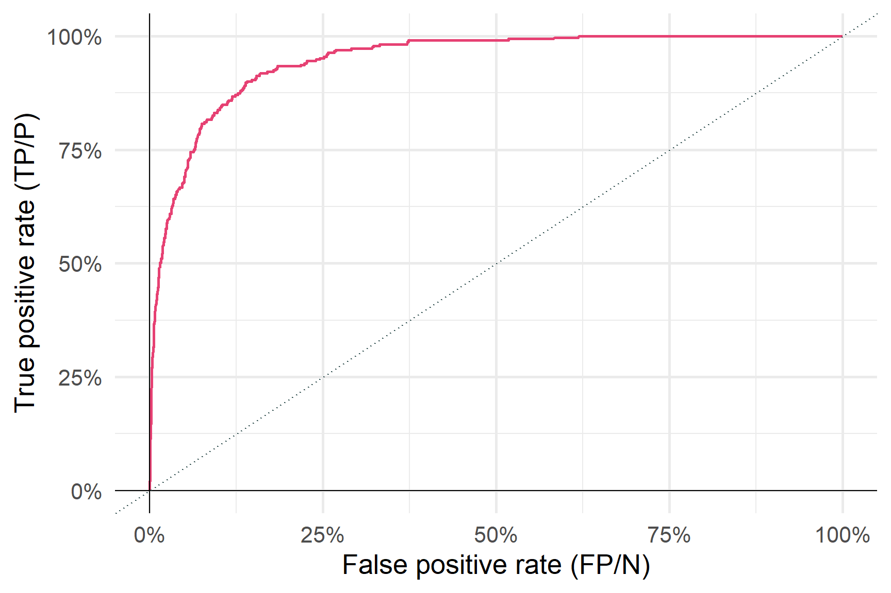«Найкраща ефективність» означає, що ROC крива наближається до верхнього лівого кута.
AUC формує площу під кривою (ROC).
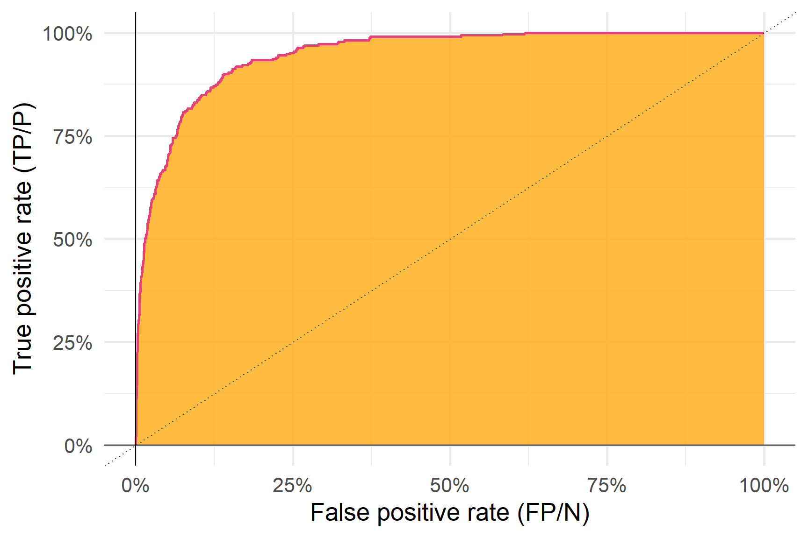«Найкраща ефективність» означає, що AUC наближається до 1. Випадковий шанс: 0,5
Q Отже, яку інформацію нам дає AUC?
A AUC повідомляє нам, наскільки ми розділили позитивні і негативні мітки.
Приклад: Розподіл імовірностей для негативний і позитивний результатів.
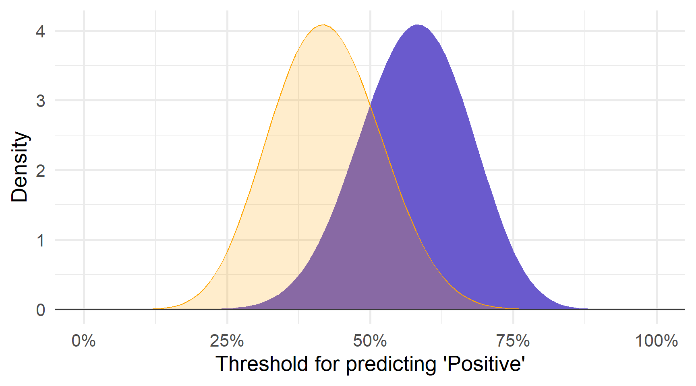Для будь-якого заданого порогового значення
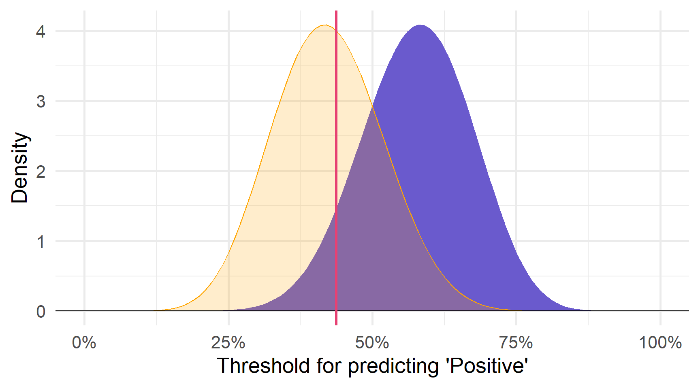Для будь-якого заданого порогового значення ми отримуємо false positives
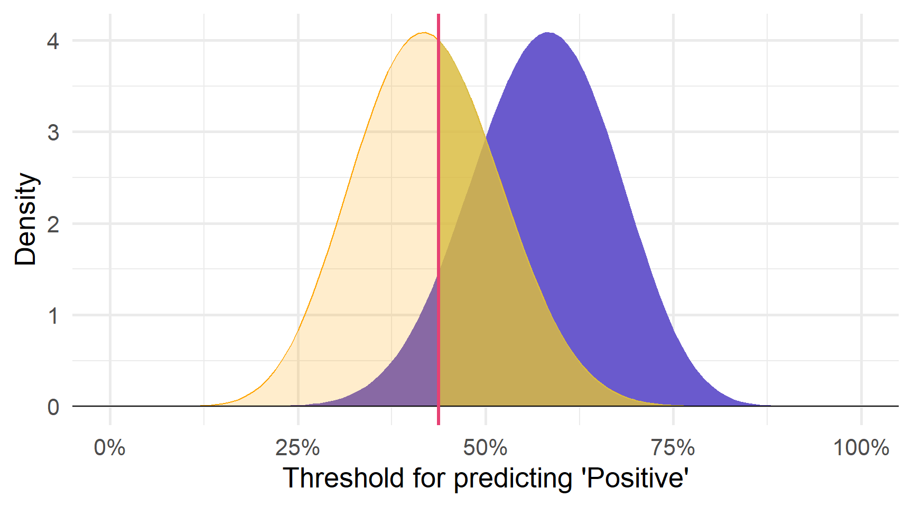Для будь-якого заданого порогового значення ми отримуємо false positives та true positives
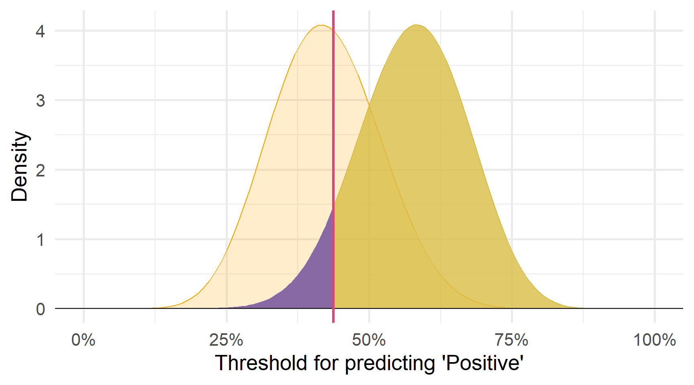… рухаючись вздовж всіх можливих порогах генерує ROC (AUC ≈ 0.872).
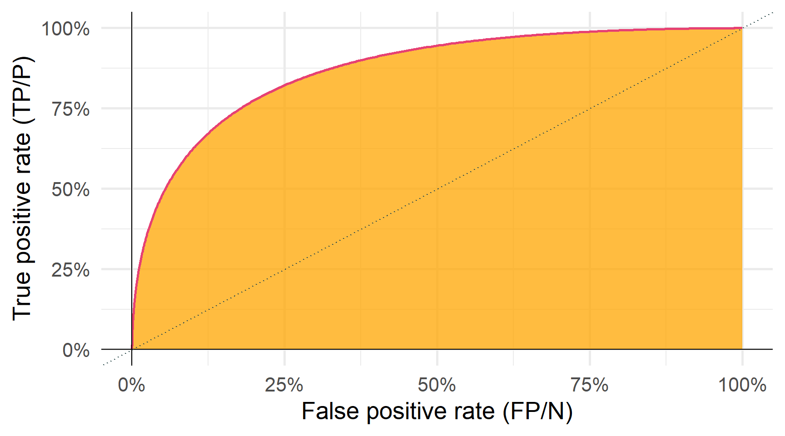Збільшення розриву між результатами negative і positive…
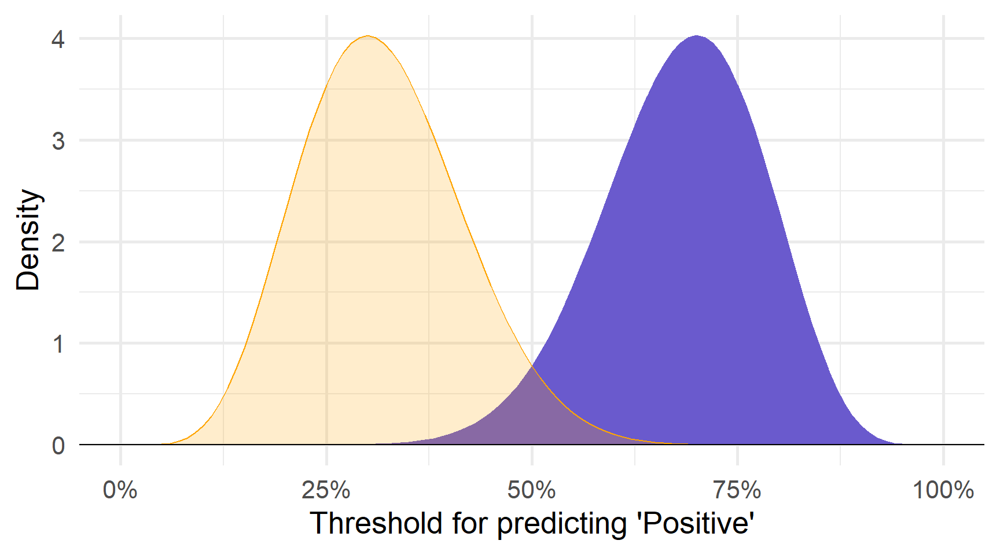… зменшує помилку (зміщує ROC) і збільшує AUC (≈ 0.994).
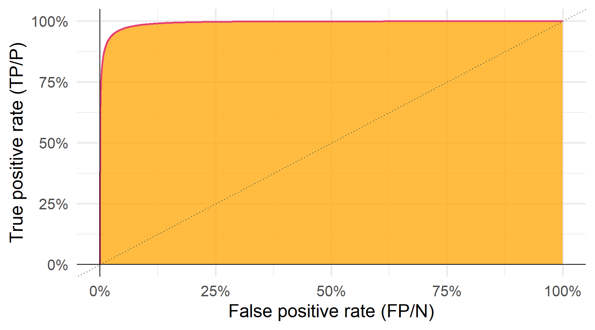Подальше збільшення розриву між результатами negative і positive…
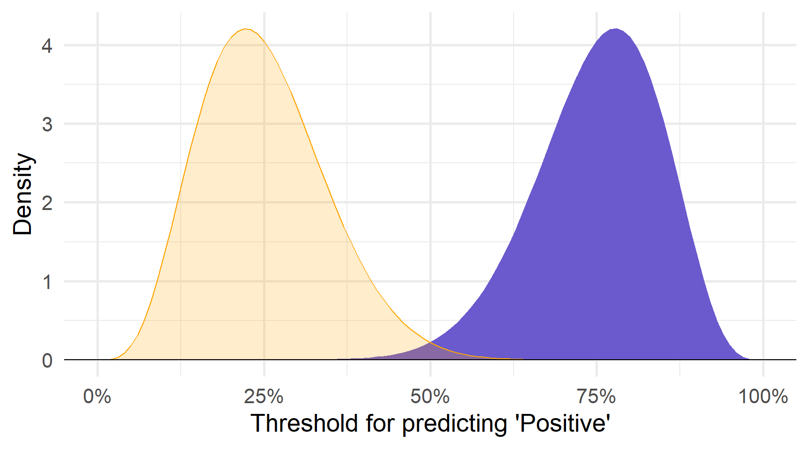… зменшує помилку (зміщує ROC) і збільшує AUC (≈ 1).
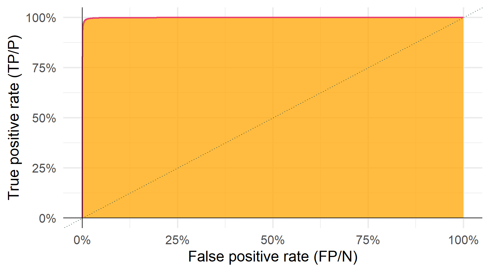Невелика різниця («вгадування») між результатами негативний і позитивний…
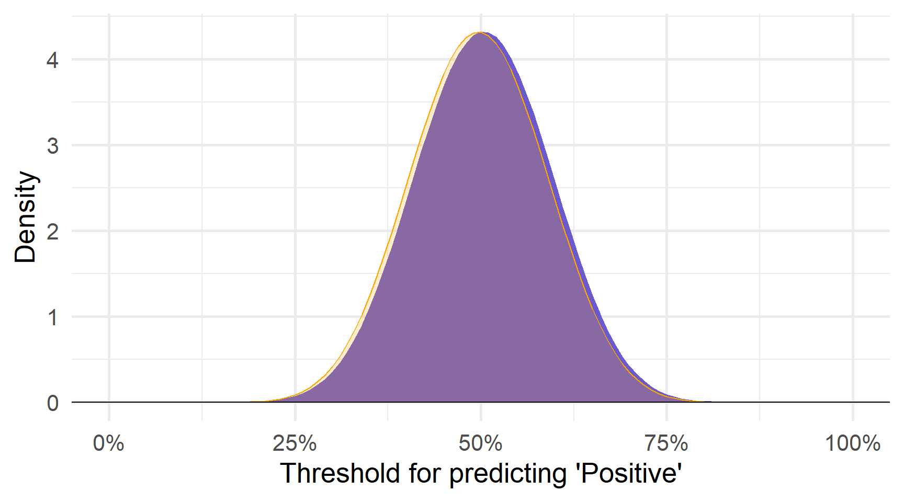… збільшує помилку (зміщує ROC) і підштовхує AUC до 0,5 (тут ≈ 0.523).
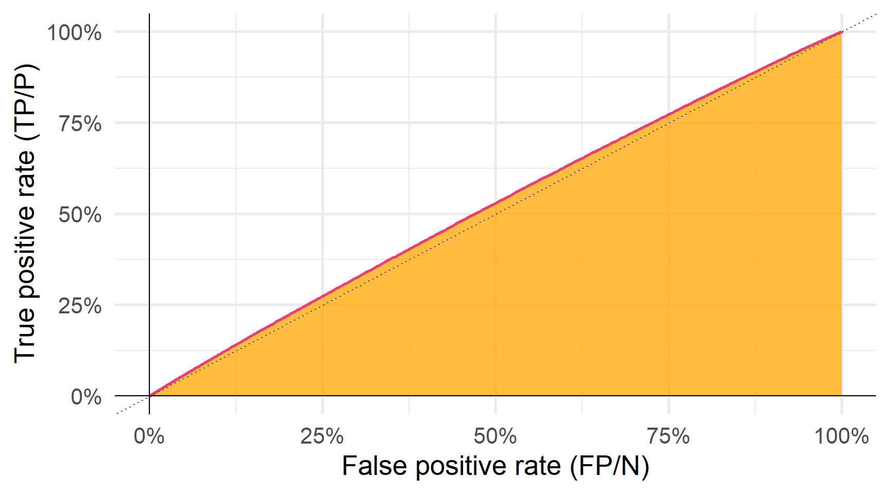Отримання результатів negative і positive у зворотному напрямку…
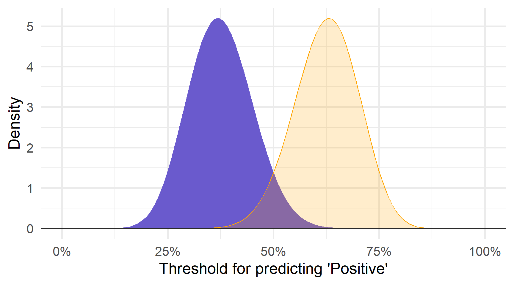… збільшує помилку (зміщує ROC) і штовхає AUC до 0 (тут ≈ 0.012).
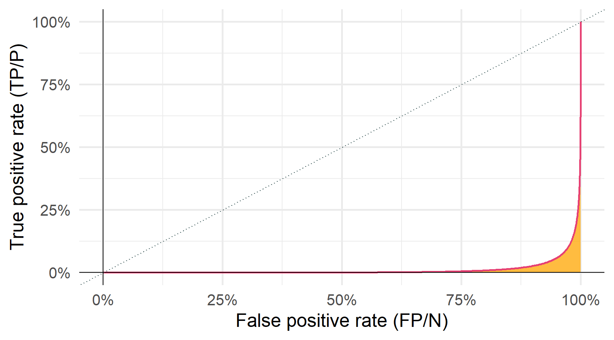AUC в R
Ви можете обчислити AUC у R за допомогою функції roc_auc() з yardstick. Перегляньте документацію для прикладів.
Logistic elasticnet glmnet() (для ridge , lasso та elasticnet) поширюється на logistic regression шляхом визначення аргументу family у glmnet, тобто ,
Ви також можете використовувати механізм "glmnet" для logistic_reg() в parsnip.
Дякую за увагу!
ihor.miroshnychenko@kneu.ua